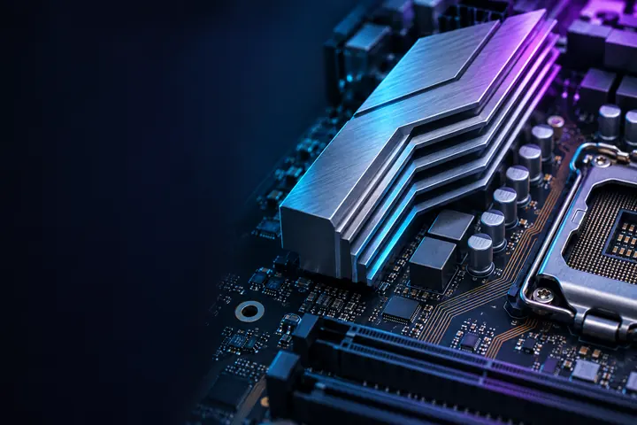

Homelab
When My Homelab Started Feeling Like a Platform
A hands-on journey through Kubernetes, monitoring, automation and self-hosted infrastructure as my homelab evolved into something that started feeling like a real platform.
Technology / Cybersecurity / AI / Gadgets

Homelab
A hands-on journey through Kubernetes, monitoring, automation and self-hosted infrastructure as my homelab evolved into something that started feeling like a real platform.
Kubernetes
What it took to turn a few Linux machines into a practical cluster for learning deployments, networking and operations.
CI/CD
Lessons from connecting source control, testing, image builds and deployment into one repeatable workflow.
Homelab
A hands-on journey through Kubernetes, monitoring, automation and self-hosted infrastructure as my homelab evolved into something that started feeling like a real platform.
Kubernetes
What it took to turn a few Linux machines into a practical cluster for learning deployments, networking and operations.
CI/CD
Lessons from connecting source control, testing, image builds and deployment into one repeatable workflow.
Monitoring
Building useful dashboards, collecting host metrics and learning which signals make infrastructure easier to operate.
Linux
The permissions, networking and service failures that turned Linux concepts into practical operational knowledge.
Docker
Moving beyond local containers toward repeatable builds, registries, health checks and automated releases.
Security updates, online privacy, and practical ways to protect your devices and data.
No cybersecurity articles published yet.
AI news, tools, and explainers for everyday use.
No AI articles published yet.
Hands-on coverage of hardware and everyday electronics.
No hands-on reviews published yet.
Explore Gadgets & ReviewsBuild confidence with computers, networking, operating systems, and troubleshooting.
Visit Tech AcademyNo Academy guides published yet.
StackedByBayo makes technology easier to understand through news, educational articles, practical guides, and reviews. It was founded by Bayo Ogundele, an IT Help Desk professional in Lagos, Nigeria.
About the publication and its founder